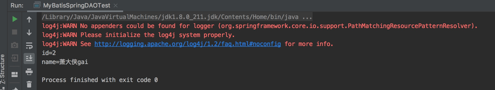

1、引用 MyBatis-Spring 集成 jar 包
在工程中引用 mybatis-spring-1.3.1.jar包
点击 File>Project Structure...，选中 Libraries，添加 java 引用

2、创建新的 Package
com.sajor.study.c07
com.sajor.study.c07.dao
test.com.sajor.study.c07
3、在 dao 包中创建一个 User 类
在类中声明id、name、sex和email属性，及其对应的getter/setter方法。
package com.sajor.study.c07.dao;
import java.io.Serializable;
public class User implements Serializable {
private static final long serialVersionUID = 1L;
private int id = 20190802;
private String name = "";
private String sex;
private String email;
@Override
public String toString() {
StringBuffer stringBuffer = new StringBuffer();
stringBuffer.append("id=");
stringBuffer.append(id);
stringBuffer.append("\n");
stringBuffer.append("name=");
stringBuffer.append(name);
return stringBuffer.toString();
}
public int getId() {
return id;
}
public void setId(int id) {
this.id = id;
}
public String getName() {
return name;
}
public void setName(String name) {
this.name = name;
}
public String getSex() {
return sex;
}
public void setSex(String sex) {
this.sex = sex;
}
public String getEmail() {
return email;
}
public void setEmail(String email) {
this.email = email;
}
}
4、在 dao 包中创建一个映射文件 UserMapper.xml
<?xml version="1.0" encoding="UTF-8"?>
<!DOCTYPE mapper PUBLIC "-//mybatis.org//DTD Mapper 3.0//EN" "http://mybatis.org/dtd/mybatis-3-mapper.dtd">
<mapper namespace="com.sajor.study.c07.dao.UserMapper">
<resultMap id="UserResultMap" type="com.sajor.study.c07.dao.User">
<result column="id" property="id" jdbcType="BIGINT"/>
<result column="name" property="name" jdbcType="VARCHAR"/>
<result column="sex" property="sex" jdbcType="VARCHAR"/>
<result column="email" property="email" jdbcType="VARCHAR"/>
</resultMap>
<select id="findUserById" parameterType="java.lang.Integer" resultMap="UserResultMap">
<!--根据 id 查询用户信息 -->
select * from USER where id = #{id,jdbcType=BIGINT}
</select>
<insert id="addUser" parameterType="user">
<!--添加用户信息 -->
insert into USER(name,sex,email)
values(#{name},#{sex},#{email})
</insert>
<select id="findAllUsers" resultMap="UserResultMap">
select * from USER
</select>
</mapper>
5、在 dao 中创建一个 UserDAO 类
UserDAO 继承 SqlSessionDaoSupport
package com.sajor.study.c07.dao;
import org.mybatis.spring.support.SqlSessionDaoSupport;
public class UserDAO extends SqlSessionDaoSupport {
// 通过id查询
public User findUserById(Integer id) {
return this.getSqlSession().selectOne( "com.sajor.study.c07.dao.UserMapper.findUserById", id);
}
}
6、创建 MyBatis 的核心配置文件 c07-mybatis-spring-config-dao.xml
对比前面 mybatis 的配置文件，这里不再需要配置数据源，直接使用 spring 里面配置的数据源即可。
<?xml version="1.0" encoding="UTF-8"?>
<!DOCTYPE configuration PUBLIC "-//mybatis.org//DTD Config 3.0//EN" "http://mybatis.org/dtd/mybatis-3-config.dtd">
<configuration>
<!--配置别名 -->
<typeAliases>
<package name="com.sajor.study.c07.dao"/>
</typeAliases>
<!--配置 Mapper 的位置 -->
<mappers>
<mapper resource="com/sajor/study/c07/dao/UserMapper.xml"/>
</mappers>
</configuration>
7、新建一个 Spring 配置文件 c07-spring-mybatis-config-dao.xml
<?xml version="1.0" encoding="UTF-8"?>
<beans xmlns="http://www.springframework.org/schema/beans" xmlns:xsi="http://www.w3.org/2001/XMLSchema-instance"
xsi:schemaLocation="http://www.springframework.org/schema/beans
http://www.springframework.org/schema/beans/spring-beans.xsd">
<!--1. 定义数据源，mybatis 直接使用 spring 中定义的数据源-->
<bean id="dataSource" class="org.springframework.jdbc.datasource.DriverManagerDataSource">
<property name="driverClassName" value="com.mysql.jdbc.Driver"/>
<property name="url"
value="jdbc:mysql://localhost:3306/TestDB?autoReconnect=true&characterEncoding=utf8&useUnicode=true&useSSL=false"/>
<property name="username" value="root"/>
<property name="password" value="123456"/>
</bean>
<!--2. 配置 MyBatis 工厂 -->
<bean id="sqlSessionFactory" class="org.mybatis.spring.SqlSessionFactoryBean">
<!--注入数据源 -->
<property name="dataSource" ref="dataSource"/>
<!--指定核心配置文件位置 -->
<property name="configLocation" value="classpath:c07-mybatis-spring-config-dao.xml"/>
</bean>
<!--3. 实例化 Dao -->
<bean id="userDAO" class="com.sajor.study.c07.dao.UserDAO">
<!-- 注入 SqlSessionFactory 对象实例-->
<property name="sqlSessionFactory" ref="sqlSessionFactory"/>
</bean>
</beans>
8、创建测试类 MyBatisSpringDAOTest
package test.com.sajor.study.c07;
import com.sajor.study.c07.dao.User;
import com.sajor.study.c07.dao.UserDAO;
import org.springframework.context.ApplicationContext;
import org.springframework.context.support.ClassPathXmlApplicationContext;
public class MyBatisSpringDAOTest {
public static void main(String[] args) {
try {
ApplicationContext ctx = new ClassPathXmlApplicationContext("c07-spring-mybatis-config-dao.xml");
UserDAO userDAO = (UserDAO) ctx.getBean("userDAO");
User user = userDAO.findUserById(2);
System.out.println(user);
} catch (Exception e) {
e.printStackTrace();
}
}
}
9、运行测试类

本文由 Sajor
创作，采用 知识共享署名4.0 国际许可协议进行许可
本站文章除注明转载/出处外，均为本站原创或翻译，转载前请务必署名
最后编辑时间为: 2019-08-02T14:48:45+08:00